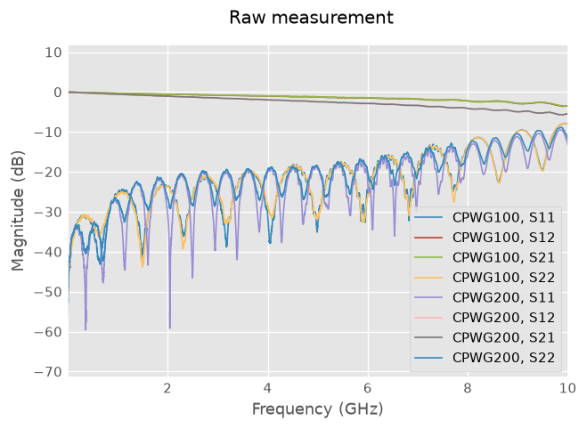
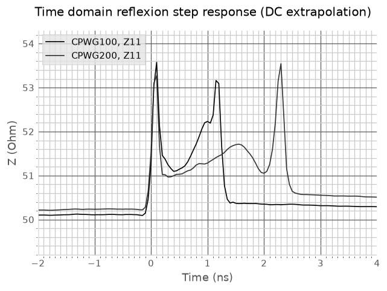
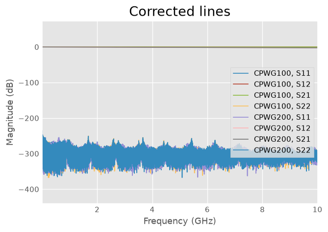
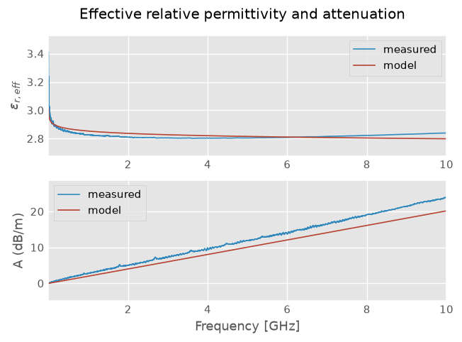
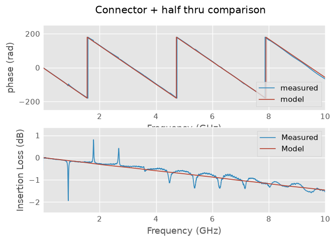
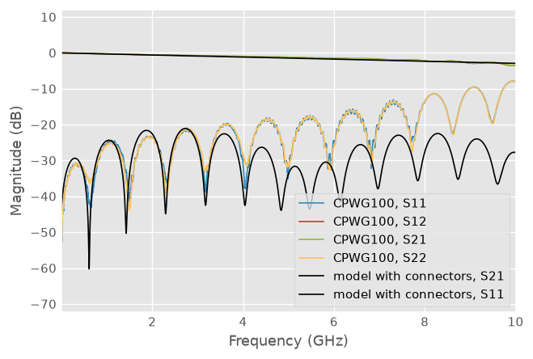
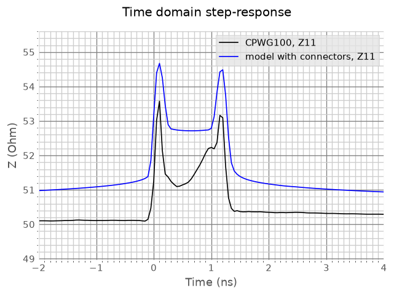

DefinedAEpTandZ0 media example#
[1]:
%load_ext autoreload
%autoreload 2
import matplotlib.pyplot as plt
import numpy as np
from matplotlib.ticker import AutoMinorLocator
from numpy import log, sum
from scipy.optimize import minimize
import skrf as rf
import skrf.mathFunctions as mf
from skrf.calibration import NISTMultilineTRL
rf.stylely()
Measurement of two CPWG lines with different lengths#
The measurement where performed the 21th March 2017 on a Anritsu MS46524B 20GHz Vector Network Analyser. The setup is a linear frequency sweep from 1MHz to 10GHz with 10’000 points. Output power is 0dBm, IF bandwidth is 1kHz and neither averaging nor smoothing are used.
CPWGxxx is a L long, W wide, with a G wide gap to top ground, T thick copper coplanar waveguide on ground on a H height substrate with top and bottom ground plane. A closely spaced via wall is placed on both side of the line and the top and bottom ground planes are connected by many vias.
Name |
L (mm) |
W (mm) |
G (mm) |
H (mm) |
T (um) |
Substrate |
|---|---|---|---|---|---|---|
MSL100 |
100 |
1.70 |
0.50 |
1.55 |
50 |
FR-4 |
MSL200 |
200 |
1.70 |
0.50 |
1.55 |
50 |
FR-4 |
The milling of the artwork is performed mechanically with a lateral wall of 45°.
The relative permittivity of the dielectric was assumed to be approximately 4.5 for design purpose.

[2]:
# Load raw measurements
TL100 = rf.Network('CPWG100.s2p')
TL200 = rf.Network('CPWG200.s2p')
TL100_dc = TL100.extrapolate_to_dc(kind='linear')
TL200_dc = TL200.extrapolate_to_dc(kind='linear')
plt.figure()
plt.suptitle('Raw measurement')
TL100.plot_s_db()
TL200.plot_s_db()
plt.figure()
t0 = -2
t1 = 4
plt.suptitle('Time domain reflexion step response (DC extrapolation)')
ax = plt.subplot(1, 1, 1)
TL100_dc.plot_z_time_step(0, 0, ax=ax, color='0.0')
TL200_dc.plot_z_time_step(0, 0, ax=ax, color='0.2')
ax.set_xlim(t0, t1)
ax.xaxis.set_minor_locator(AutoMinorLocator(10))
ax.yaxis.set_minor_locator(AutoMinorLocator(5))
ax.patch.set_facecolor('1.0')
ax.grid(True, color='0.8', which='minor')
ax.grid(True, color='0.4', which='major')
plt.show()


Impedance from the line and from the connector section may be estimated on the step response. The line section is not flat, there is some variation in the impedance which may be induced by manufacturing tolerances and dielectric inhomogeneity.
Note that the delay on the reflexion plot are twice the effective section delays because the wave travel back and forth on the line.
Connector discontinuity is about 50 ps long. TL100 line plateau (flat impedance part) is about 450 ps long.
[3]:
Z_conn = 53.2 # ohm, connector impedance
Z_line = 51.4 # ohm, line plateau impedance
d_conn = 0.05e-9 # s, connector discontinuity delay
d_line = 0.45e-9 # s, line plateau delay, without connectors
Dielectric effective relative permittivity extraction by multiline method#
[4]:
#Make the missing reflect measurement
#This is possible because we already have existing calibration
#and know what the open measurement would look like at the reference plane
#'refl_offset' needs to be set to -half_thru - connector_length.
reflect = TL100.copy()
reflect.s[:,0,0] = 1
reflect.s[:,1,1] = 1
reflect.s[:,1,0] = 0
reflect.s[:,0,1] = 0
# Perform NISTMultilineTRL algorithm. Reference plane is at the center of the thru.
cal = NISTMultilineTRL([TL100, reflect, TL200], [1], [0, 100e-3], er_est=3.0, refl_offset=[-56e-3])
plt.figure()
plt.title('Corrected lines')
cal.apply_cal(TL100).plot_s_db()
cal.apply_cal(TL200).plot_s_db()
plt.show()
/home/alex/code/scikit-rf-docs/skrf/calibration/calibration.py:2948: UserWarning: No switch terms provided
EightTerm.__init__(self,
/home/alex/code/scikit-rf-docs/skrf/mathFunctions.py:303: RuntimeWarning: divide by zero encountered in log10
out = 20 * np.log10(z)

Calibration results shows a very low residual noise floor. The error model is well fitted.
[5]:
from skrf.media import DefinedAEpTandZ0
freq = TL100.frequency
f = TL100.frequency.f
f_ghz = TL100.frequency.f/1e9
L = 0.1
A = 0.0
f_A = 1e9
ep_r0 = 2.0
tanD0 = 0.001
f_ep = 1e9
x0 = [ep_r0, tanD0]
ep_r_mea = cal.er_eff.real
A_mea = 20/log(10)*cal.gamma.real
def model(x, freq, ep_r_mea, A_mea, f_ep):
ep_r, tanD = x[0], x[1]
m = DefinedAEpTandZ0(frequency=freq, ep_r=ep_r, tanD=tanD, z0=50,
f_low=1e3, f_high=1e18, f_ep=f_ep, model='djordjevicsvensson')
ep_r_mod = m.ep_r_f.real
A_mod = m.alpha * log(10)/20
return sum((ep_r_mod - ep_r_mea)**2) + 0.001*sum((20/log(10)*A_mod - A_mea)**2)
res = minimize(model, x0, args=(TL100.frequency, ep_r_mea, A_mea, f_ep),
bounds=[(2, 4), (0.001, 0.013)])
ep_r, tanD = res.x[0], res.x[1]
print(f'epr={ep_r:.3f}, tand={tanD:.4f} at {f_ep * 1e-9:.1f} GHz.')
m = DefinedAEpTandZ0(frequency=freq, ep_r=ep_r, tanD=tanD, z0=50,
f_low=1e3, f_high=1e18, f_ep=f_ep, model='djordjevicsvensson')
plt.figure()
plt.suptitle('Effective relative permittivity and attenuation')
plt.subplot(2,1,1)
plt.ylabel(r'$\epsilon_{r,eff}$')
plt.plot(f_ghz, ep_r_mea, label='measured')
plt.plot(f_ghz, m.ep_r_f.real, label='model')
plt.legend()
plt.subplot(2,1,2)
plt.xlabel('Frequency [GHz]')
plt.ylabel('A (dB/m)')
plt.plot(f_ghz, A_mea, label='measured')
plt.plot(f_ghz, 20/log(10)*m.alpha, label='model')
plt.legend()
plt.show()
epr=2.853, tand=0.0130 at 1.0 GHz.

Relative permittivity \(\epsilon_{e,eff}\) and attenuation \(A\) shows a reasonable agreement.
A better agreement could be achieved by implementing the Kirschning and Jansen microstripline dispersion model or using a linear correction.
Connectors effects estimation#
[6]:
# note: a half line is embedded in connector network
coefs = cal.coefs
r = mf.sqrt_phase_unwrap(coefs['forward reflection tracking'])
s1 = np.array([[coefs['forward directivity'],r],
[r, coefs['forward source match']]]).transpose()
conn = TL100.copy()
conn.name = 'Connector'
conn.s = s1
# delay estimation,
phi_conn = (np.angle(conn.s[:500,1,0]))
z = np.polyfit(f[:500], phi_conn, 1)
p = np.poly1d(z)
delay = -z[0]/(2*np.pi)
print(f'Connector + half thru delay: {delay * 1e12:.0f} ps')
print(f'TDR read half thru delay: {d_line/2 * 1e12:.0f} ps')
d_conn_p = delay - d_line/2
print(f'Connector delay: {d_conn_p * 1e12:.0f} ps')
# connector model with guessed loss
half = m.line(d_line/2, 's', z0=Z_line)
mc = DefinedAEpTandZ0(m.frequency, ep_r=1, tanD=0.025, z0=50,
f_low=1e3, f_high=1e18, f_ep=f_ep, model='djordjevicsvensson')
left = mc.line(d_conn_p, 's', z0=Z_conn)
right = left.flipped()
check = mc.thru() ** left ** half ** mc.thru()
plt.figure()
plt.suptitle('Connector + half thru comparison')
plt.subplot(2,1,1)
conn.plot_s_deg(1, 0, label='measured')
check.plot_s_deg(1, 0, label='model')
plt.ylabel('phase (rad)')
plt.legend()
plt.subplot(2,1,2)
conn.plot_s_db(1, 0, label='Measured')
check.plot_s_db(1, 0, label='Model')
plt.xlabel('Frequency (GHz)')
plt.ylabel('Insertion Loss (dB)')
plt.legend()
plt.show()
Connector + half thru delay: 316 ps
TDR read half thru delay: 225 ps
Connector delay: 91 ps

Connector + thru plots shows a reasonable agreement between calibration results and model.
Final check#
[7]:
DUT = m.line(d_line, 's', Z_line)
DUT.name = 'model'
Check = m.thru() ** left ** DUT ** right ** m.thru()
Check.name = 'model with connectors'
plt.figure()
TL100.plot_s_db()
Check.plot_s_db(1,0, color='k')
Check.plot_s_db(0,0, color='k')
plt.show()
Check_dc = Check.extrapolate_to_dc(kind='linear')
plt.figure()
plt.suptitle('Time domain step-response')
ax = plt.subplot(1,1,1)
TL100_dc.plot_z_time_step(0, 0, ax=ax, color='k')
Check_dc.plot_z_time_step(0, 0, ax=ax, color='b')
t0 = -2
t1 = 4
ax.set_xlim(t0, t1)
ax.xaxis.set_minor_locator(AutoMinorLocator(10))
ax.yaxis.set_minor_locator(AutoMinorLocator(5))
ax.patch.set_facecolor('1.0')
ax.grid(True, color='0.8', which='minor')
ax.grid(True, color='0.5', which='major')


The plots shows a reasonable agreement between model and measurement up to 4 GHz.
Further works may include implementing CPWG medium or modeling the line by more sections to account the impedance variation vs. position.
[ ]: